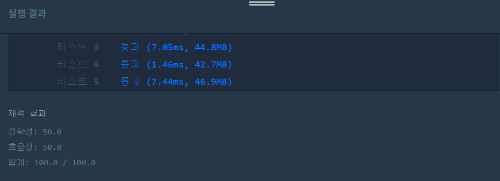

문제
https://programmers.co.kr/learn/courses/30/lessons/42884
( ᐛ )و 도전
1. 설계
- 빨리 나간 순서대로 정렬한다.
- 진입시점이 늦은 것을 발견했을 때, 해당 나가는 시점을 저장해 앞에까지는 카메라를 만났음을 확정한다. 따라서 카메라++한다.
2. 구현 (성공 코드)
import java.util.*;
/**
*
* @author HEESOO
*
*/
class Solution {
public int solution(int[][] routes) {
int answer = 0;
Arrays.sort(routes, new Comparator<int[]>(){//routes[i][1]기준 오름차순 정렬
@Override
public int compare(int[] a, int[] b){
return a[1]-b[1];
}
});
int latest=Integer.MIN_VALUE;//Integer의 최솟값으로 초기화
for(int i=0;i<routes.length;i++){//모든 경로를 순회
if(latest<routes[i][0]){//현재 기준 진입시점이 가장 늦은 차를 발견하면
latest=routes[i][1];//해당 차의 나가는 점을 저장
answer++;//현재 차까지 경로에 카메라를 하나 추가하여 최소 한번쯤은 카메라를 만나는 것을 보장
}
}
return answer;
}
}
3. 결과
 성공٩(˘◊˘)۶
4. 설명
- routes를 빨리 나간 순서대로 정렬한다.
- 차량이 나가기 전에 최소 한 번 카메라를 만나면 된다.
- 진입시점이 늦은 차량을 찾는다.
- 차들의 경로가 겹친다면 가장 늦게 들어온 차의 진입시점에 카메라를 놓으면 된다.
- 그러면 겹치는 차들은 카메라를 최소 한 번 만났으므로 선상에서 제외한다.
- 뒤의 값들은 현재까지의 가장 늦게 나가는 차량 뒤에 진입하므로(차들의 경로가 겹친다고 가정하고 있음!) latest에 가장 늦게 들어온 차의 나가는 시점을 저장한다.
- 차들의 경로가 겹치지 않더라도 문제없다.
- 경로가 겹치지 않는다는 것은 앞에까지의 차들은 계산이 끝났다는 뜻이다. 내 진입시점이 현재로선 가장 늦으므로 위 if문을 만족하여 카메라를 추가하게 된다.
- latest는 가장 작은 값으로 초기화되야 한다.
- routes에서 진입시점이 가장 작은 값이 무엇인지 알 수 없기 때문에, 그보다 더 작은 값을 저장하여 if문에서 비교가 가능하도록 해야한다. 문제에서는 차량 진입, 나가는 시점의 범위를 주었으므로 -30000으로 초기화해도 된다.
해결 완료!
접근 방식을 모르겠어서 구글링하다가 엄청 간단하게 해결한 코드가 있어서 그 코드를 이해하는데 시간을 다썼다. 주석이라도 한줄 달아줬다면 좋았을텐데…. 주석의 중요성 다시 한 번 느낀다. 어쨌든 이런 생각을 하는게 대단할 뿐
참고
- Greedy ‘단속카메라’ 알고리즘 문제풀이 https://geehye.github.io/programmers-greedy-06/#